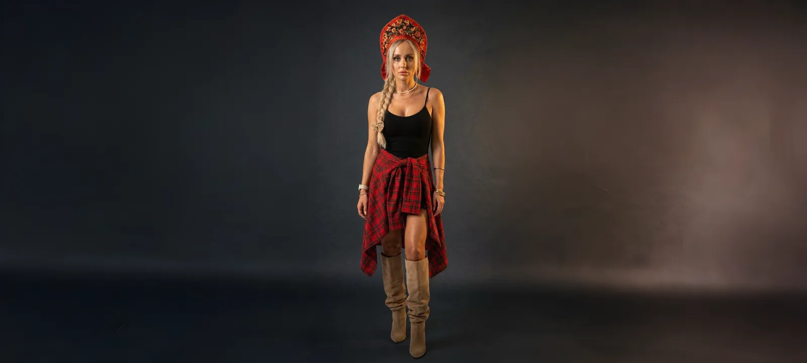

Дачный сезон
Попадание в чарты Shazam и сильный рост по данным BandLink.
Слушать
Официальный сайт артистки
Русскоязычная артистка с современным этно-поп визуальным кодом и танцевальным звучанием.
Музыка
Попадание в чарты Shazam и сильный рост по данным BandLink.
СлушатьСвежий сингл и попадания в плейлисты Яндекс Музыки.
СлушатьСингл Lina MAYER.
СлушатьСингл Lina MAYER.
СлушатьЧасть публичного каталога Lina MAYER.
СлушатьЧасть публичного каталога Lina MAYER.
СлушатьЧасть публичного каталога Lina MAYER.
СлушатьЧасть публичного каталога Lina MAYER.
СлушатьЧасть публичного каталога Lina MAYER.
СлушатьЧасть публичного каталога Lina MAYER.
СлушатьЧасть публичного каталога Lina MAYER.
СлушатьЧасть публичного каталога Lina MAYER.
СлушатьОб артистке
Lina MAYER — артистка, которую невозможно перепутать, когда однажды услышал и увидел. В её музыке танцевальная поп-энергия встречается с русским характером, а в образе — современная сцена, красный акцент и узнаваемая сила этно-мотива.
Её треки звучат ярко, цепко и по-настоящему самобытно: от «Дачного сезона» до «Ноготочков», от лёгкого вайба до песен с почти народной интонацией. Lina MAYER не пытается быть похожей на кого-то ещё — она собирает вокруг себя свой мир, где поп-музыка, электронное звучание и русский визуальный код работают как единое целое.
«Дачный сезон» попадал в Shazam Top-200 по России, а «Ноготочки» были отмечены в плейлистах Яндекс Музыки. Но главное — это ощущение: в Lina MAYER есть артистическая дерзость, узнаваемость и вера в свой путь.
Достижения
Официальные ссылки